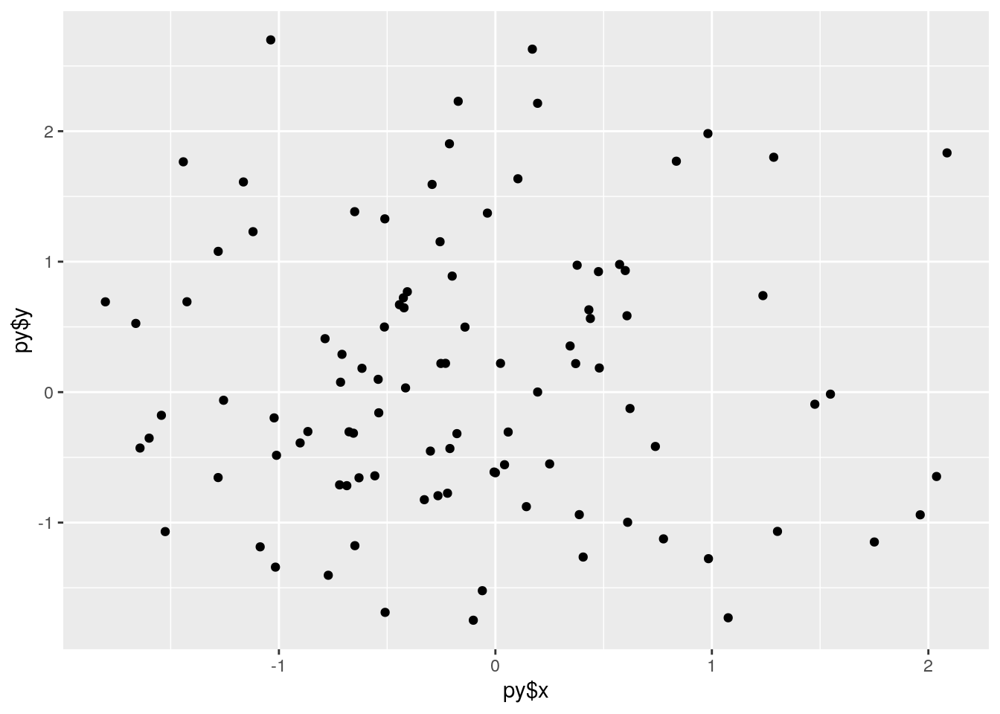

Two very important languages!
When it comes to coding, there’s 2 major languages we need to know: R and python. But knowing one doesn’t mean we can just ignore the other–it’s best if we can interact with the two at once. This can be done through the reticulate package. Here we have two code chunk for each language.
R:
names(knitr::knit_engines$get())## [1] "awk" "bash" "coffee" "gawk" "groovy"
## [6] "haskell" "lein" "mysql" "node" "octave"
## [11] "perl" "psql" "Rscript" "ruby" "sas"
## [16] "scala" "sed" "sh" "stata" "zsh"
## [21] "highlight" "Rcpp" "tikz" "dot" "c"
## [26] "cc" "fortran" "fortran95" "asy" "cat"
## [31] "asis" "stan" "block" "block2" "js"
## [36] "css" "sql" "go" "python" "julia"
## [41] "sass" "scss" "theorem" "lemma" "corollary"
## [46] "proposition" "conjecture" "definition" "example" "exercise"
## [51] "proof" "remark" "solution"And now python!
hw = "hello world"
hw[0:11]## 'hello world'Now that we’ve done a bit of each language, let’s combine them with reticulate.
#R code chunk
library(reticulate)
matplotlib <- import("matplotlib")
matplotlib$use("Agg", force = TRUE)
hi<-"Welcome"#Python code chunk
hi="to reticulate!"
print(r.hi,hi) #access R-defined objects with r. ## Welcome to reticulate!#R code chunk
cat(c(hi,py$hi)) #access Python-defined objects with py$## Welcome to reticulate!What if we want to plot some graphs?
import numpy as np
import matplotlib.pyplot as plt
import pandas
x=np.random.normal(0,1,100)
y=np.random.normal(0,1,100)
plt.scatter(x,y)Here we can do a ggplot with R too.
library(ggplot2)
ggplot()+geom_point(aes(py$x,py$y))